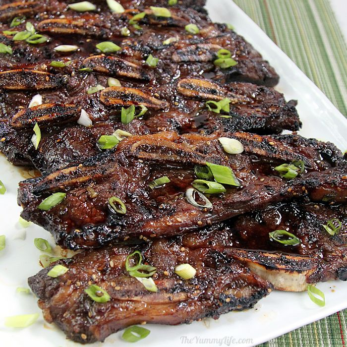

Korean BBQ
갈비
Ingredients
4-6 servings
- 3.5lb Beef short ribs
- soy sauce
- water
- honey
- garlic
- onion
- ginger
- korean pear
- toasted sesame oil
- toasted sesame seeds
- black ground pepper
- soybean paste
- hot pepper paste
- green onions
- lettuce
- perilla leaves
- green chili pepper
- cucumber
- carrot
Directions
- Trim excess fat from the short ribs and rinse a couple times in cold water.
- Soak the ribs in cold water for 10-20 minutes to remove the blood.
Make the Marinade:
- In a large bowl, add ⅓ cup soy sauce, ⅓ cup water or cooking wine, ¼ cup honey (or ⅓ cup brown sugar), and 1 ts ground black pepper.
- Blend 1 Korean pear (about 2 cups’ worth), 8 cloves of garlic, 1 medium onion, and 1 ts of chopped ginger until it turns into a white creamy liquid.
- Add it to your soy sauce base and add 2 tbs toasted sesame oil.
*tip: If you can’t find a Korean pear, use 2 ripe bosc pears. I sometimes use bosc pears and they work well.
- Rinse the short ribs in fresh cold water a couple more times to remove any remaining bone fragments. Drain the water.
- Add the ribs to the marinade and mix it well, by hand.
- Keep it in the refrigerator for at least an hour. Overnight is better, but an hour is ok if you are short of time.
Make ssamjang dipping sauce:
- Mix these 2 tbs soy bean paste, 1 tbs of hot pepper paste, 1 stalk of chopped green onion, 1 clove of minced garlic, 1 ts honey, 1 ts of toasted sesame oil, and 1 ts sesame seeds in a small bowl with a spoon.
Preapre vegetables:
- Rinse and drain lettuce and perilla leaves. Put them on a plate or basket.
- Cut a cucumber into strips 3½ inch to 4 inches in length and ½ inch thick (8-10 cm long x1½ cm thick),
- Chop green chili peppers and slice a few cloves of raw garlic and put them next to green lettuce and perilla leaves.
Let's cook and eat!
- Grill, pan fry, or BBQ the ribs. The LA style cut is thin, so they’re cooked much faster than usual ribs. It takes only about 5 minutes!
- When the both sides are cooked, put them on a serving plate. Cut the meat part off the bone with scissors into bite sized pieces.
- Put a piece of meat on top of a lettuce leaf and a periilla leaf. Add dipping sauce, garlic, and a piece of green chili pepper. Fold it over into a small package, and pop it into your mouth in one bite!
 Brian S Park
Brian S Park